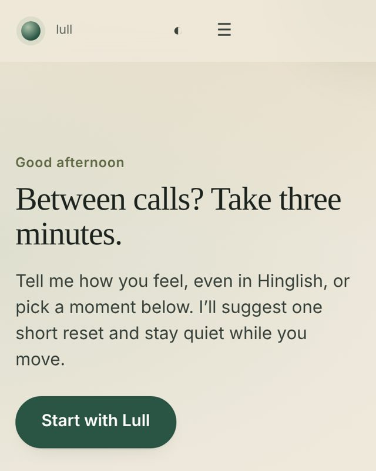
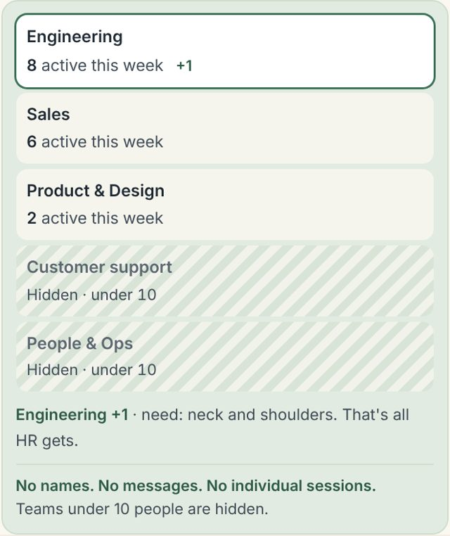
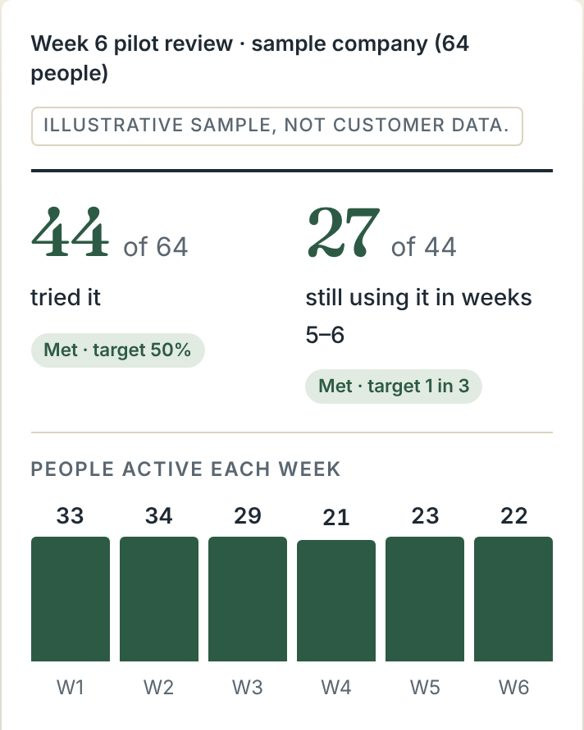

Case study · Rupak Ghanpathi
From a workout prototype to a wellbeing product HR can measure
Problem, research, decisions, what shipped, how I'm testing it, and what I got wrong. A 3-minute read.
TL;DR
- Problem: companies pay for wellbeing benefits most employees never use, and HR can't prove usage without watching individuals.
- Bet: a 3-minute desk reset that lives in the workday, with team-level proof and no personal data.
- Status: shipped and live. Now measuring whether HR/TA people would roll it out, before building more.
1. The problem, with evidence
The honest catch: large studies find individual wellness programmes (apps, mindfulness) show little effect on wellbeing (Oxford, 46,336 workers, 2024), and in a randomised trial the people who joined were already the healthier ones (Illinois, NBER). So Lull claims only a short break people actually take, builds it into team routines (an organisational change, which the Oxford authors recommend), and measures reach, not just use.
And the trust problem: only about 29% of employees trust leadership with data from feedback tools (UC Today). A tool that can see individuals won't get used.
2. Users and buyers
- Employee (user)
- Wants a reset between calls that isn't homework.
- HR / TA (champion)
- Wants proof the benefit is used, without surveillance or legal risk.
- Founder / CFO (approver)
- Wants a small, honest trial with a clear stop rule.
3. Where it began, and what I got wrong
- v0 · Workout companionGuided movement sessions, persona onboarding, keyword-based safety.
- LearnedPeople between calls choose by problem ("stiff neck"), not training type. Onboarding added friction. The safety word list missed 10 of 14 body concerns in my eval.
- v1 · Desk resets for teamsFive office-safe resets, seated or standing; onboarding cut; fixed safety rules the AI can't override, in English and Hinglish.
- v2 · B2B layerTeam view with privacy rules, week-6 readout, pilot terms and kill criteria.
- v3 · Feedback funnelRebuilt the site around one goal: try it, then say if your team would use it (section 6).
4. Key decisions and trade-offs
| Decision | Why | Trade-off |
|---|---|---|
| Team totals only; teams under 10 hidden (plus a second team if subtraction could reveal one) | Answers the trust finding; privacy as a product rule, not a policy | HR gets less detail than they might ask for |
| No personal data collected at all | Removes consent and leak risk for HR under India's DPDP Act | No per-person retention analysis |
| Fixed safety rules above the AI | Eval showed the word list alone missed cases; the model can add caution, never remove it | Some false stops |
| Reminders on the employee's own calendar or Slack | Usage collapses without a trigger | No push notifications |
| Targets agreed upfront; "Not met" shown openly | HR distrusts vendor ROI claims; an honest pilot is the differentiator | The product can visibly fail |
5. What shipped

App No install, no account.

Team view Totals, small teams hidden.

Readout Targets met or not, plainly.
Also: requirements document (BRD), pilot proposal and pack, data and safety pages, personalised outreach links, unit and browser tests.
6. Designing the funnel
The first site was a sales page: four different calls to action, text-heavy, and the feedback ask buried in the footer. I rebuilt it around one goal, using research on attention and behaviour:
- 0–10 sA question about her: "How are you feeling right now?"
- 10–60 sOne tap starts a real 40-second step on the page
- 60–90 s"Here's all HR would see," then "Would your team use this?"
- Why
- Visitors decide in 10–20 seconds (NN/g). A small first ask makes the bigger one likelier (foot-in-the-door). People judge by the best moment and the end (peak-end), so the ask comes right after the reset.
- Cut
- Three competing CTAs, a 15-minute feedback form, repeated privacy copy. Maybe/No answers stay on the page with a one-tap reason instead of a form.
7. How I measure it
- Funnel
- Started a step → finished it → answered Yes / Maybe / No → the reason behind a No.
- Pilot
- Tried it, came back within a week, set a reminder, felt lighter.
- Stop if
- Under 30% try by week 2, or under 1 in 5 return within a week.
8. What I heard → what I changed
Testing with HR and TA people now. First results by mid-November 2026. This section will show the numbers, the top objection, and the change it led to.
Changelog
- 28 Oct 2026 Polish pass: pilot page rebuilt to one idea per section (5,250px to 4,400px); automated accessibility audit (axe, WCAG 2.2) fixed across all pages in light and dark; the demo now scrolls itself into view, then to the question; the bottom button hides while you're inside the demo.
- 28 Oct 2026 Final pass: Apple's discipline in a busy HR reader's language. Product named, stat row (40 sec to try, 15 min to set up, 0 names, 10+), "What they type stays on their phone", footnotes gathered, chevron links. Checked against Wellhub and Plum, which sell to the same audience.
- 28 Oct 2026 Benchmarked against Apple (privacy pillars, design language, one idea per section), Headspace, Calm, Microsoft Viva, Officevibe and Wakeout. Homepage cut to one idea per section; the demo unfolds only after a tap.
- 28 Oct 2026 New hook after headline research: a statement about HR's outcome ("See if your team takes a break. Without seeing anyone."), a live "what you'd see" preview, "nothing for you to run".
- 28 Oct 2026 Restructured the homepage insight-first: headline reframe, a plain-language privacy facts label, "why this when apps fail" up front, a no-risk pilot, objections visible. Sources refreshed to 2025.
- 28 Oct 2026 Added the honest answer to "don't wellness programmes fail?", advice-framed follow-up questions, "opt-in and invisible", a site menu with dark mode, and this case study.
- 28 Oct 2026 Rebuilt the homepage around one goal: a live 40-second step, then "Would your team use this?". Real product screens; employee-trust promises.
- 27 Oct 2026 Split the site into HR pages and a product page; mobile layout fixes.
- Earlier Workout companion rebuilt into five desk resets; safety rules hardened after the eval.
9. What I'd do next
- Fix the top objection from user testing before adding anything new.
- Run one real 6-week pilot with a single team, against the agreed targets.
- Only then: Slack-native resets, if pilot data shows reminders drive return visits.
Full product detail: workflow, alternatives, kill criteria →